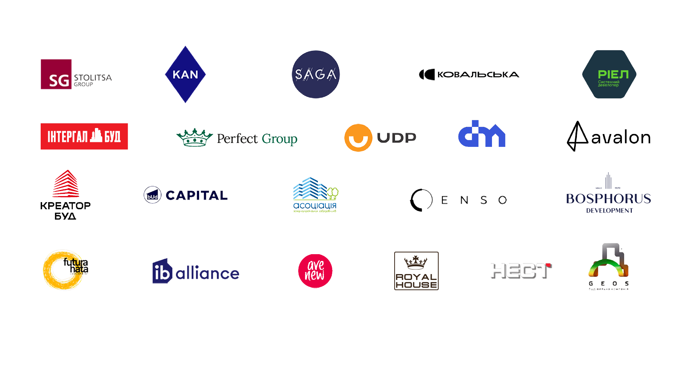

Ми будуємо твоє місто
Київ змінюється не тільки будинками. Нові квартали запускають школи, кафе, сервіси, робочі місця, події і щоденні маршрути для сотень тисяч людей.
житла збудовано в Києві
Це не абстрактні квадратні метри. Це світло у вікнах, нові двори, перші поверхи, маршрути до школи і місця, де місто стає ближчим до людини.
житлових комплексів уже стали частиною Києва
Кожен комплекс додає місту нові сценарії: де купити каву, де погуляти ввечері, куди повести дитину, де поруч працювати або зустрічатися з сусідами.
Кожен житловий квартал запускає десятки бізнесів поруч.
Кафе, школи, спорт, ритейл, сервіс, логістика, благоустрій і виробництво матеріалів працюють як один міський ланцюг.одне робоче місце у будівництві створює ще 3-4 суміжних
Девелопмент тягне за собою виробників, підрядників, логістику, сервісні команди, локальний бізнес і повсякденну комерцію на перших поверхах.
мешканців живуть у наших будинках
Коли квартал працює, у ньому з'являються не тільки адреси. З'являється спільнота: події, взаємодопомога, дитинство у дворі, спорт і відчуття дому.
21 учасник будує Київ
Українська асоціація девелоперів об'єднує компанії, які працюють із містом як із живим середовищем: від будинку до двору, від сервісу до спільноти.
